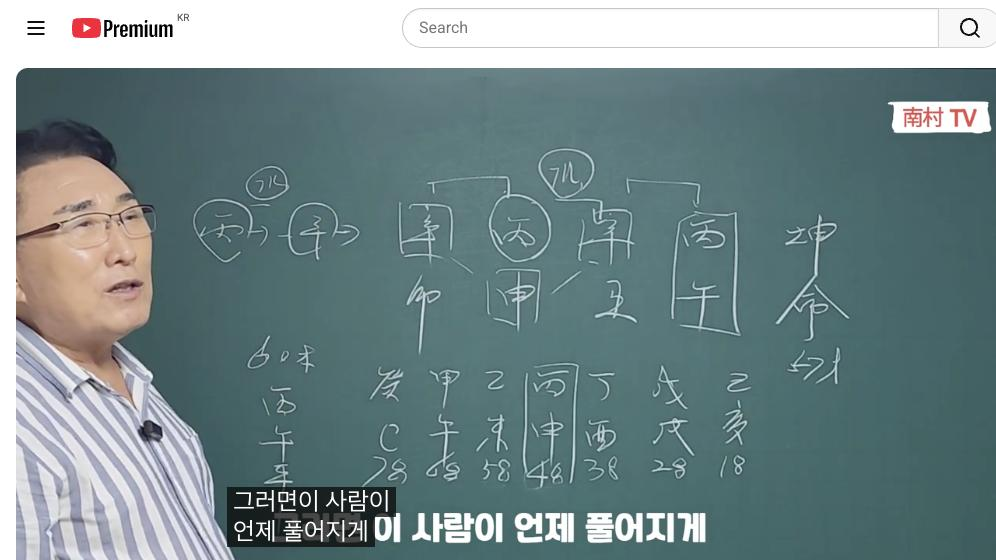
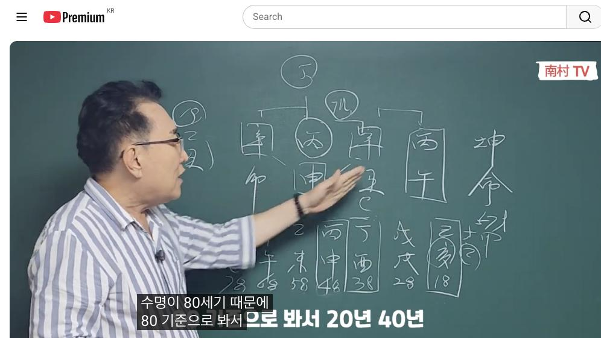
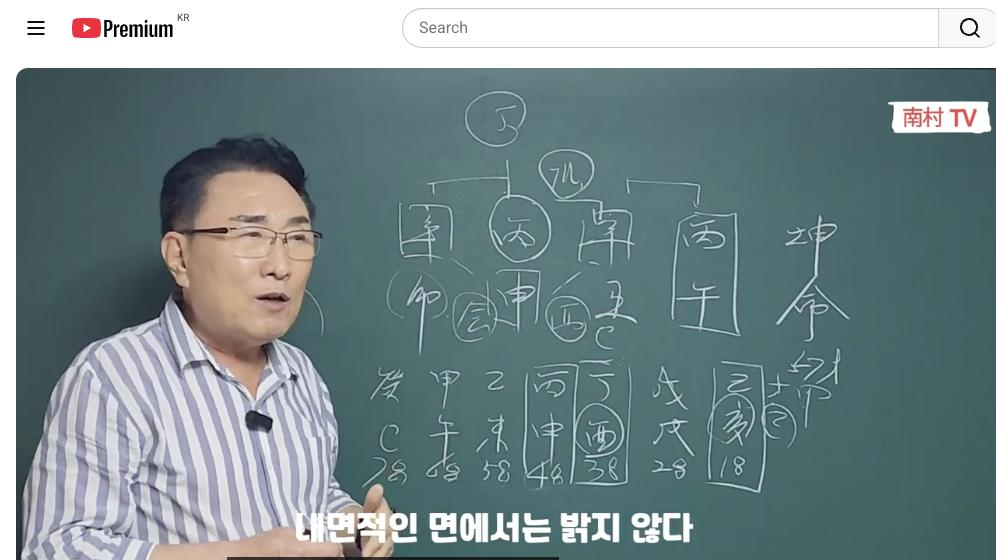

남촌물상TV 전체 문서 › 동영상 V0011
[실전사례]3 이때 결혼한 상담자 100% 이혼, 병신합 실전사례

| 문서 번호 | V0011 (동영상) |
|---|---|
| 영상 URL | https://www.youtube.com/watch?v=2mzRghUIrSI |
| 영상 ID | 2mzRghUIrSI |
| 게시일 | 2023-09-18 |
| 길이 | 17:24 (1044초) |
| 조회수 | 4,683회 (수집 시점 기준) |
| 카테고리 | People & Blogs |
| 자막 | ko (자동생성) |
| 수집 시각 | 2026-08-30 17:03 (KST) |
영상 설명 (YouTube 설명 원문 그대로)
남모르는 눈물이 많은 여자 사주, 병신합의 실전사례 #실전사례 #눈물 #사주 #물상론 #병신합수 #이혼사주 #팔자 #여자
전체 자막 (465구간 · 타임스탬프 클릭 시 해당 장면으로 이동)
[0:01][음악]
[0:54]관을 어디서 만들 수 있는가를 먼저
[0:56]구라 그 말이에요 우리 사주
[0:57]물상문에서는 자 일단
[1:00]합수를 병화 일간에
[1:04]합수로서 물을 만들 수 있죠
[1:08]그러면이
[1:09]경신 합수에서
[1:11]물이 생긴다는 얘기는
[1:13]나의 합해서
[1:15]관이 생긴다는 얘기다 자 그러면 나
[1:18]같은 똑같은 병화가
[1:20]어디 있느냐 여기에
[1:22]국가자리에 존속이 있다 자 그런
[1:24]얘기는 나하고 똑같은 건이 국가적
[1:27]있어요 그럼 자 여기에 신금이라는
[1:29]것은 이렇게도 합을 할 수가 있고
[1:31]이렇게도 합을 살 수가 있죠
[1:35]그러면 쉽게 얘기해서
[1:36]양쪽 다
[1:38]합이 이루어진 상태라이 말이에요
[1:39]그래서 물을 만든다 그러면 이런
[1:42]관을 어떻게 우리가 뭘 하면
[1:44]되겠는가를 한번 볼까요이 사람이
[1:46]무엇을 하면 좋겠느냐
[1:48]자 그러면
[1:50]병화 일간의 특성이
[1:52]경호위반의 특성이 자 제로 가보자
[1:55]제로 가면 천간에 신급이 있단
[1:57]말이에요 그러면 우리는 물상무에서
[1:59]제일 간법으로 봤을 때
[2:02]이 금을 이용해서 네가 뭘 할 거냐가
[2:06]답이다 이게 직업에 논리예요
[2:08]그러면이 신금이나 병화는
[2:11]다른 갑자기 합으로만 이래서 물을
[2:13]만들었다 그럼 결과죠 뭐예요 나의
[2:16]합의에서 물을 만든 국가 내가이
[2:18]병화가 여기 국가적으로 나한테 같이
[2:20]있는데
[2:21]그러면
[2:22]내가 국가 공직에 관련된 일을 할
[2:25]건데라고 답이 나오는 거죠
[2:27]자 그럼 재물은 내가 죄를 깔고 있고
[2:31]여기 재물 여기 제물 여기 재물이
[2:34]줄줄이 있어요 그러니까 제가 많이
[2:37]있는 건 좋다고 말이에요 근데
[2:40]과연이 제가 나한테 어떻게이
[2:44]재물이 나한테 올 수 있는가 이게
[2:47]국가 자료가 합을 해야 금이
[2:49]놀아줘요 돈이 생기거든 말이에요
[2:51]금을 어떻게 이용하느냐
[2:53]합을 해서 물을 생겼다 그러면 내가
[2:55]국가 공직으로 갈 수 있는 사주가
[2:57]된다고 본다이 말이에요
[2:59]자 그러면 봤을 때 자 금으로만
[3:02]첨부 틀릴 금으로만
[3:04]그러면 자이 사람이 할 수 있는 일이
[3:07]국가 공직 중에서도 무엇을 하면
[3:09]좋겠느냐 뭐라고 하면 좋겠느냐
[3:12]전부 다이 사주와 금으로만 구성이
[3:14]되어 있어요 그럼 국가 공직에서
[3:17]금이라는 거 뭐예요 우리이 사람들이
[3:18]재물이죠 소위
[3:21]국가적인
[3:22]재원으로서 돈을 만드는 데가 어디냐
[3:24]이것을
[3:25]얘기할 수 있다 이런 얘기예요
[3:27]물상론에서 그러면
[3:28]국가에서
[3:29]재물이 만들 수 있는 데는 우리는 못
[3:32]가요
[3:32]국세청이 일본 아닙니까 국고에서
[3:34]세금을 그대로 비춰가는 것
[3:39]하고 싶은 공무원 중에서도
[3:42]돈을 만질 수 있는 공무원 중에
[3:44]제일모직 고무이다
[3:46]그래서이 사람은 현재
[3:49]채무직에
[3:50]근무하고 있는 여자분입니다
[3:52]자 이런 사주를 가지고 직업을 볼 때
[3:55]간단하게 볼 수 있는 거예요 자
[3:57]그러면 한번 문제도 있겠네
[3:59]어떤 문제 있겠느냐 다 합으로서
[4:03]본인이 먹고 살았는데 자 그러면
[4:06]풀어지면 둘 것이냐 이것도 생각을
[4:07]하죠
[4:09]결론적인
[4:10]풀어지게 되면 거의 직장을 그만둔
[4:13]확률이 크다 왜
[4:15]관이 사라지기 때문에
[4:17]간단하지 않아 무서운 것처럼 이게
[4:18]우리 불쌍한 문제다 이거예요 자
[4:20]그러면이 사람이
[4:21]언제 풀어지게 있는가 다 먹을 수
[4:23]있잖아요
[4:25]대원도 있네 여기에 코비를 잘
[4:27]넘겨야 돼 또 여기에 컴퓨터 차를
[4:30]넘겨야 돼 우리는 자 물상군에서
[4:33]양광과 은간이 합하면
[4:35]양가는
[4:37]응가로 베낀다 그래서이
[4:39]경화가 정화의 기질로 바뀔 수밖에
[4:42]없다 그 말입니다
[4:44]그래서 이런 사람들은
[4:46]본인이 공직시장을 하더라도 중간에
[4:50]쉽게 잘린 사람이에요 왜
[4:52]풀어질 듯 확률이 클 때는 내가
[4:54]그만둬
[4:56]몸이 건전한
[4:58]관계로서
[4:59]회사를 그만둘 경우가 많다이 말이에요
[5:01]그래서
[5:02]휴직계를 잘내는 사람 이런 사람이
[5:04]쉽게 얘기해서 자
[5:06]그러면이 사람이
[5:08]생전에서 크러나간 과정 다 먹으면
[5:10]어떻게 볼 것이냐
[5:13]그러면이 기회 대운이었어요 기회대운
[5:15]18시에 기회 대운이에요
[5:17]참 지혜 대운이라는 것은 어떤 것을
[5:20]뜻할 수 있겠느냐 이게 굉장히
[5:21]중요하죠
[5:23]그러면이 기회라는 것은 우리
[5:24]불쌍문에서 자
[5:26]무슨 키토라는 것은
[5:29]각기 합을 해서
[5:30]목을 끌고 온다는 말이에요 그러면 자
[5:33]목이라는이 기토에서 갑목을 끌고 왔을
[5:36]때 우리는 뭐가 될까요
[5:38]을목이 든다
[5:39][음악]
[5:40]그러면
[5:41]본인의이 을목이라는 것은
[5:44]본인의
[5:45]죄의 칼 자루가 된다 그 말이에요
[5:47]그러니까 제제가 되죠
[5:49]그러면이 사람이 꼭 그럼 지지에는
[5:50]해수와
[5:53]신인과 여기
[5:55]축토가는 사활을 꿇을 수 있죠
[5:57]인신사의 개념을 가지고 있고
[6:00]해묘미에 대한 관점을 가지고 있기
[6:02]때문에 나의
[6:05]재제에 대한 돈을 벌 수는 이미
[6:07]강하다
[6:08]그러면이 학생이 만약에 18살 때
[6:10]기운이라면 나는 뭘 할까요
[6:13]돈 벌어야 돼
[6:14]뭘로 내가이 재물을 쓸 수 있는 것은
[6:17]합을 쓰는 재물 국가 공직에서
[6:20]돈을 벌겠다는 생각이
[6:21]강하기 때문에 이런 사람들은 그때 다
[6:24]고등학교 가더라도
[6:26]창업 학교 갈 수 있는 물이 크다
[6:28]규격수가 그렇게 볼 수 있다 이거예요
[6:29]그래서 우리들은 이런 것을 전제적으로
[6:32]봤을 때 어떠한 의미를 가지고
[6:36]학교 때 어떤 일을 할 것인가 하는
[6:37]것을 볼 수가 있다 이거예요 자
[6:40]그러면
[6:43]사주에 이제 18세가 봤을 때
[6:47]19세가 뭐냐 19세가
[6:50]무슨 전이었냐 그러면 월축년이에요
[6:52]자을
[6:54]총리였다 그 말이에요
[6:55]얘가 19세 때예요 19세 뜨기인데
[6:57]19985년도
[7:04]85년도가 주께서 을축년이었단
[7:06]말이에요 그럼 우리 청년이 사람이
[7:08]하는 일이 고작 3만 뛰었다 그
[7:09]말이에요 아까 얘기한 그대로 네가이
[7:13]대운이라는 건 설명할 때 뭐라고
[7:14]하냐면 대우는 네가 10년 동안에
[7:18]적응할 수 있는 운이 어떻게 작용을
[7:21]하겠는가를
[7:22]그러면 너는
[7:23]기토로서의 내 제 돈을 보는 걸 살
[7:26]수 있는 길을 테러라고 생각했을
[7:28]것이다 그리고
[7:30]활동적인 면과 네가 해묘음이
[7:33]재물을 택하기 때문에 일찍 돈을
[7:35]벌였던 생각 때문에이 사람은 상어
[7:37]바퀴로 갔다 그 말이에요 같고
[7:39]본인이 취업을 했다는 생각이 굉장히
[7:40]다 같이 그래서이 사람은
[7:43]체험을 보기 위해서
[7:44]무슨 공부를 했겠어요
[7:46]국가 공무원 시험을 보기 위해서
[7:48]엄청난 노력을 했을 것만 본다 이거야
[7:52]그래서이 사람의 경점은 그럼 어디
[7:54]속으로 합격을 했을까요 그 말이에요
[7:56]자이 사람은 일찍 학교로 됩니다 제가
[7:59]무슨 얘기냐이 사람이 그 다음에
[8:02]20살 때가 뭐예요
[8:03]월척 그 다음에
[8:05]병인이죠 병인년
[8:07]20세가
[8:08]병인년이었단 말이야 병인년 자 그러면
[8:10]자국이
[8:12]물상 것을 어떻게 얘기할까요
[8:14]병인년이라는 것은 3대 1 합의
[8:17]우리가 되냐 안 되냐를 배웠을 거예요
[8:18]자 일대일 합은 된다 2대에 반했다
[8:22]3대 2번으로 된다 그러면이 평화가
[8:24]병화가 세계가 합해서 하버렸을 거에요
[8:27]촌년이니까 여기 학습하다 20대니까
[8:29]20대 20대
[8:31]20 우리 남천불사원에서는이
[8:34]8글자를 4개로 나눠서
[8:37]기독 4개만 할 때 20년 간족에
[8:39]수명이 80세기 때문에
[8:41]80 기준으로 봐서 21년
[8:45]40년 60년 80세 이렇게 개념으로
[8:48]구별해 볼기 때문에
[8:50]신축이라는 글씨가이 귀에서 평화합에서
[8:52]하나가 참된 합을 했죠 이럴 때
[8:55]국가에서 어디서일까요 국가에서
[8:58]인호술 국가적인
[9:02]시험을 합격을 일찍 했다는 얘기에요
[9:04]그래서 이런 사람들과 언제 우리 학교
[9:06]갈까요 이렇게 보는 거예요
[9:08]무쌍돌에서는
[9:10]용신 격국 시장을 호텔 아예 보지
[9:12]않기 때문에 영실이 뭐다 격국이다 할
[9:14]필요 없는 거예요 가장
[9:16]쉽게 직업을 판단할 수 있고 가장
[9:18]쉬운 방법으로 사주를 푸는 방법이
[9:20]우리 물시장군의 장점입니다
[9:23]그리고
[9:24]현실적으로 눈에 보여요 사주가 쉽게
[9:27]보여야지 왜 우리가 어렵게 공부합니다
[9:29]저 역시 많은 시간을
[9:32]토해서
[9:33]지나기 세월을 다 보냈고 제가
[9:35]물상문을 연구에는 학문 자체로
[9:37]천간의 합의 원리를 개발해서 저
[9:39]나름대로 열심히 했던 결과가 지금
[9:41]여러분들이 배울 수 있고 많은
[9:44]사람들이 현재
[9:45]현업 하는 사람들이 활용을 하고
[9:46]있습니다
[9:48]적중률이 채워요 자
[9:50]그러면 저희들이 물상놀이 지금 그
[9:52]직업까지는 정확히 반대했다 이거야
[9:54]사실
[9:55]직업을 거의 다 알다 보면
[9:57]직업을 벌다 보면 거의 사주는 보고
[9:59]끝나는 거예요 자 직업이 운이 가냐
[10:02]안 가나이 관계를 거기까지예요 이것이
[10:04]이제 지금만 관찰하면 되는 거예요
[10:06]그러면이 사람 결혼을 언제 할까요 자
[10:09]a 언제 생겼을까요
[10:12]판단하잖아요
[10:13]나하고 3대 하부를 했을 때
[10:16]근데 이제 어떤 거냐 자 볼까요
[10:18]나하고 합을 했을 때이 해묘미 하라고
[10:22]했어요 예측해줬다
[10:23]그러면이 병인년에
[10:25]임의 한몫도 되고 인묘진도 된다 자
[10:29]친히
[10:30]오면 신자진도 될 수 있다이 말이에요
[10:33]그러면 자 이때 나의 부부의 관
[10:35]제물이 왔을 때
[10:37]결과적으로이 사람은
[10:39]시계에서
[10:41]병인년에 한 3대1 합을 했을 때
[10:43]합숙 이때부터 남자가 쫓아오기
[10:45]시작했다
[10:46]검증된 사실입니다 그래서 그때부터
[10:48]남자를 만나게 되고 그 사람의 대한
[10:51]결혼까지 현재 살고 있는 사람이 그
[10:52]사람이다
[10:54]자 이런 것을 그럼 보자 그 말이에요
[10:56]그러면
[10:57]언제 결혼을 했겠느냐
[10:59]참 좋아하죠 우리 불쌍하게 결혼하죠
[11:02]결혼 자 결혼하는데 보통
[11:05]결혼할 때
[11:06]합이 이루어질 때 결혼을 많이 하라
[11:08]그래요
[11:09]그러면 자
[11:11]천간에 합을 하고 지지에 퍼부니 합을
[11:13]하면 굉장히 더 좋겠죠
[11:14]근데이 남자가 자꾸
[11:17]결혼을 하자고 쫓아다니기 때문에 일찍
[11:18]했다 그 말이에요 그때도 언제냐
[11:21]신미년에 했다 자
[11:23]신미 년 했으면 어떤 경우가 있을까요
[11:26]세계 신금이 하나로 화물일 때예요
[11:28]그래서 이때
[11:29]결혼을 했고 자기의 해명이 했을 때
[11:33]결과적으로 했다
[11:34]근데 원래는
[11:35]원래는
[11:36]결혼이
[11:37]신자진이 할 때 결혼을 하느냐
[11:39]신유술할 때 결혼을
[11:43]할 수 없이 해묘미로
[11:47]했는데이 사람은 경우는 삶이
[11:49]결과적으로
[11:50]딱 부부 생활에 적당한 건 아니죠
[11:51]그래서 부부 생활도 마찰도 있었을
[11:54]거고
[11:55]본인이 살아가는 과정이 좀 여러 가지
[11:57]변화가 있겠죠 그거와는 뭔
[12:00]얘기냐이 사주 구성 자체가
[12:03]묘와 5와 사유축의 유금이 끼어
[12:05]있다면
[12:06]죽음이 끼어 있죠 왜
[12:07]신구 옆으로 유금이니까
[12:08]그러면이 사람 입장에서는 자원의
[12:11]형태를 취하고 있다
[12:13]그러니까 어렵다 그 말이에요 근데
[12:15]이때가이 사람 입장에서는이 미토가
[12:18]해묘미 할 때 결혼했기 때문에
[12:20]그나마도
[12:21]장호위원 대립되면 딱 안 했기 때문에
[12:23]그 나름대로 편하게 살 수 있다 우리
[12:25]물상놀에서는 자영 요인과 형성이 될
[12:28]때 결혼하게 되면 거의 100%
[12:31]이혼한다는 사실이 큽니다 그래서
[12:33]우리는 이러한 과정을 봤을 때
[12:36]이혼하던 사람 이혼할 삶이 고통을
[12:39]겪은 사람
[12:40]4조원 보고도 금방 알 수가 있는
[12:41]거예요 자 그 다음에 그 다음에
[12:49]굉장히 좋죠 어떤 생각을 할까요 자
[12:51]여기에 정유년이라는 것은
[12:55]본인이 합수도 정화의 기질을
[12:57]가지고 있어요 그러니까 항시이 사람은
[12:59]본래는 밝은 사람이지만 내면적인
[13:03]박지 않다 우리는 합의를 가진
[13:05]사람들이 뭐라고 얘기하냐면
[13:07]본인이 평화기 때 밝게 살아야 되고
[13:09]남이 아파트처럼
[13:11]명랑하게 좋은 사람이야 근데 집에
[13:14]가서 혼자 할 때 보이지 않는
[13:17]병신학수에 물을 그려 하고 있다
[13:18]그래서 결과적으로 보이지 않는
[13:21]눈물을 얘기할 수 있다는 얘기에요
[13:23]그래서
[13:25]삶의 가정도
[13:26]참 좋았다고
[13:28]참 좋지만
[13:29]본인은 보이지 않는 눈물이 있었다고
[13:31]본다 이렇게 볼 수 있는 거예요 자
[13:34]그러면 여기에서
[13:35]사유주기란 유공을 써서 금을 쓰기
[13:37]때문에 그냥 존재하는 거예요
[13:39]금을 쓰면 어떤 샤오미가 되더라도
[13:42]금을 어떤 행위를 하느냐에 따라서
[13:45]좌우 효율을 피해갈 수 있는 것이
[13:46]무상군에 소위 뭘까요
[13:49]개헌법을 알 수 있다면
[13:51]쉽게 살아나고 방법을 알 수가 있죠
[13:52]이것이 유금이 결과적으로
[13:55]근데 행인하기 때문에 그대로 전속에
[13:58]살고 있었다
[13:59]근데
[13:59]정하기 때문에
[14:01]밝음을 택하고 싶어
[14:03]그러니까 이런 경우는
[14:04]작업률이 좋지 않습니다이 사람이
[14:07]본인의
[14:08]휴식기를 내고 중국에 가서 있다 왔다
[14:11]하는 표정에서 휴직을 많이 했던
[14:12]하나예요 자 그다음 그다음 자
[14:17]대원의 이태원이 참 굉장히 중요하죠
[14:22]합이 새롭게 왔어요
[14:24]왔어
[14:25]그러면 너는
[14:26]언제 한번 풀어져 버릴 거 아니에요
[14:28]우리는이 합이 묶여 있을 때
[14:30]신금이 오거나
[14:32]병화가 오구나 정화가 올 때
[14:34]풀어진다고 얘기했어요 근데 우리들이
[14:36]봤을 때이 병 걸 때는 풀릴 수
[14:38]있는 거예요 그러면
[14:40]풀어질 때 자기 회사로 그만둬야 돼
[14:41]근데 운이 지금 쭉 보시면 자
[14:44]52 대원의 운이 보면
[14:47]평화 운이 오냐 안 오고 있어요
[14:48]그래서
[14:50]갑오밋 보면 쭉 보면 이미
[14:51]67세까지도 계명이만도 병원이 안
[14:53]와요 그 다음에
[14:55]60세가 되면은
[14:57]60세가 되면은
[14:59]을미대운에
[15:00]60세가 되면 병원이에요 60세가
[15:02]60세가
[15:04]병호 운이 와 있다 이거예요 이때
[15:06]해산을 그만두게 된다 왜
[15:09]합이 풀어지면
[15:10]본인이 공직에 있던 것을 아까 관을
[15:13]쓰기 못하기 때문에
[15:14]결과적으로
[15:15]퇴직을 60대 간사할 것이다 그래서
[15:18]본인이 하고 싶다고 하기 싫다 여러
[15:20]가지 저한테 상담했습니다 마는 너는
[15:23]끝까지 가는게 좋아 그래서 공직을이
[15:25]사람은 60세 퇴직할 계획을
[15:27]가지고 현재에 있습니다 자 그럼
[15:29]우리가 봤을 때
[15:31]어떤 사주가이 사람이 퇴직할 것인가
[15:33]이런 것도 정확하게 알 수 있는
[15:35]것이고 그럼 퇴직할 때
[15:36]후에 어떤 결과를 갖고 있는 것이냐
[15:39]핵심적이죠
[15:40]그러면
[15:41]합수가 내 남편이죠
[15:47]남편 대신에 거기 의지하고 살았다고
[15:50]봐요
[15:51]근데
[15:52]합의 물이 관인데
[15:54]풀어지게 되면 여기서부터 남편의
[15:57]문제가 생길 수 있다 이것이 공통적인
[15:59]사실이고
[16:00]핵심적인 가장
[16:02]쉽게 판단할 수 있는 거예요 그래서
[16:03]그 이후에 남편하고
[16:06]관계가 좋지 않을 걸로 본다 그
[16:08]말이에요 그래서 이런 사주는 우리가
[16:10]쉽게
[16:11]간단하게 해명하고
[16:13]쉽게 풀어 드리지만 제가
[16:15]구태여 용신 격국시장 포트에 또
[16:17]쓰지도 않고
[16:18]쉽게 사주를 볼 수 있는 과정을
[16:20]설명을 해 드렸습니다 지금 그
[16:22]기초이론이 적합 많이 활용을 못하기
[16:24]때문에 여러분들이 이해를 못 하실
[16:27]부분도 있어요 그건 실전을 제가 많이
[16:29]해두고 싶지만
[16:31]질문지 기초반들이 우리가
[16:35]동반 문화대학교에서
[16:36]기초 강의를 하고 있습니다
[16:38]근데 거기에서 기초를 되신 분들
[16:40]쉬워요 근데 지금
[16:42]기초를 잘 모시고 내가 한 얘기도 왜
[16:44]그리하고 유심히 갈 수도 있어요
[16:45]그러나
[16:46]기초 일을 확실히 배우시고 나면 아
[16:48]어떻게 풀어나간다고
[16:50]쉽게 알 수가 있을 것입니다
[16:52]길게 시간을 제가 잡을 수 없기
[16:53]때문에
[16:54]간단하게 대충이 사주 푸는 방법을
[16:57]병실 합에 대한 설명을 드렸습니다
[16:59]지금 앞으로도
[17:02]실전 사주를 가지고 많이 해
[17:03]드리겠습니다만은 또
[17:05]궁금증이 있는 사람들은 항시 우리가
[17:07]배우신 기회가 많이 쓰잖아요
[17:09]동방불안대학교
[17:11]종로 창업발의 우리가 배울 수 있는
[17:13]기회가 있기 때문에 거기에서
[17:16]청강 기회도 되기 때문에 공부해서
[17:18]한번 오시면 좋겠다
[17:19]하는 말씀을 드리고 오늘
[17:21]경비실 하회의 시간을 마치도록
[17:22]하겠습니다
[17:23]감사합니다 수고
칠판 원국 판독 (영상 프레임을 AI가 시각 판독 · 원판 대조 필수)
坤造
천간
甲
천간
丙
천간
庚
천간
丙
지지
卯
지지
申
지지
子
지지
午
판독 신뢰도: 중간
판독 노트: 여성 명식(우측 세로 '坤命 여자'). 4주 판: 甲/卯 丙(동그라미)/申(박스) 庚(동그라미)/子 丙(박스)/午, 子·午는 해상도상 불확실. 대운 18~78 역행: 乙亥18 己亥28 戊戌28? 丁酉38 丙申48(박스) 乙未58 甲午68 · 시점 4:21 · 해당 장면 보기↗
坤造
천간
甲
천간
丙
천간
庚
천간
丙
지지
卯
지지
申
지지
子
지지
午
판독 신뢰도: 중간
판독 노트: 동일 판. 상단 丁(동그라미) 주석과 庚·丙 연결선 추가, 팔로 일부 가림. '수명이 80세 기준으로 역산' 해설 중 · 시점 8:42 · 해당 장면 보기↗
坤造
천간
甲
천간
丙
천간
庚
천간
丙
지지
卯
지지
申
지지
子
지지
午
판독 신뢰도: 중간
판독 노트: 동일 판. 卯·申 동그라미와 己亥18 박스 강조 추가된 상태 · 시점 13:03 · 해당 장면 보기↗
자막은 YouTube에서 제공하는 한국어 자동음성인식(ASR) 트랙의 원문입니다. 고유명사·한자 용어·숫자 표기에 자동인식 특유의 오류가 있을 수 있어, 원문을 가능한 한 그대로 보존했습니다. 위에 칠판 원국 판독 섹션이 있는 영상은 화면 프레임을 AI가 시각 판독한 것으로 신뢰도 표기를 확인하고, 없는 영상은 화면 도표가 문서에 포함되지 않습니다.